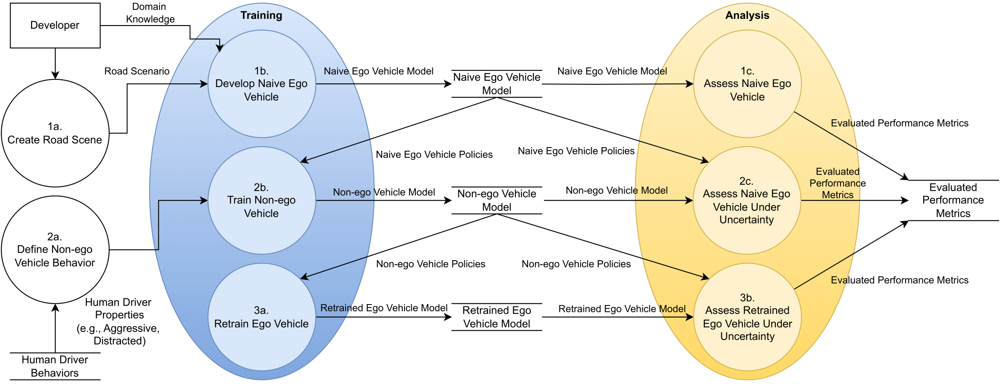
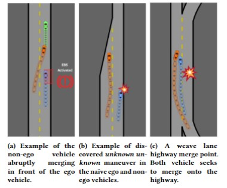
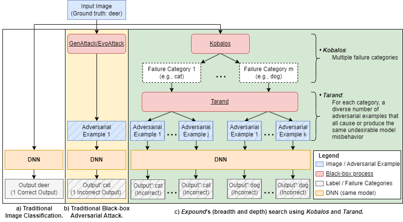
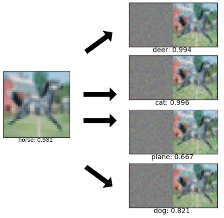
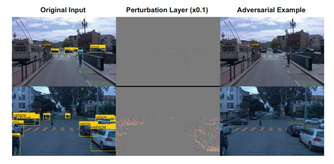
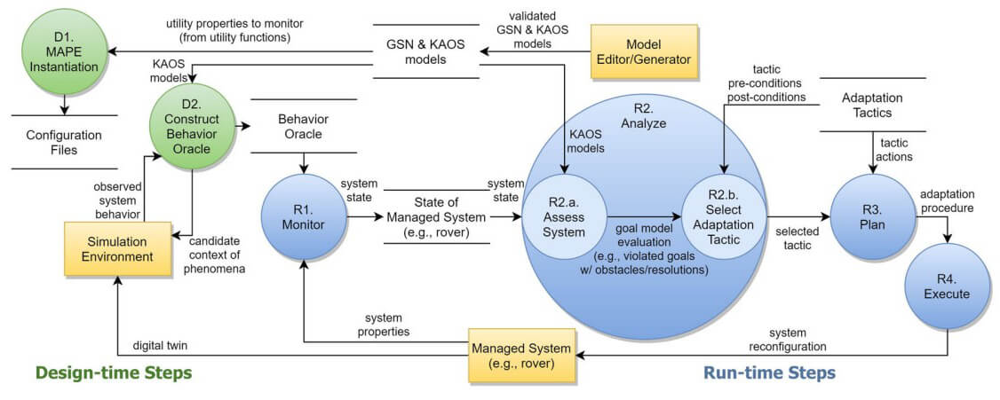
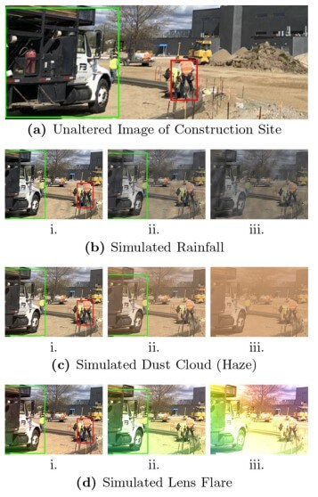
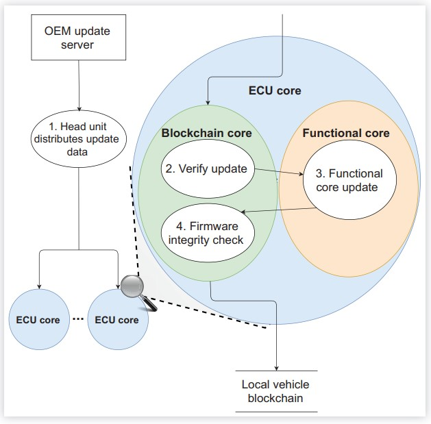
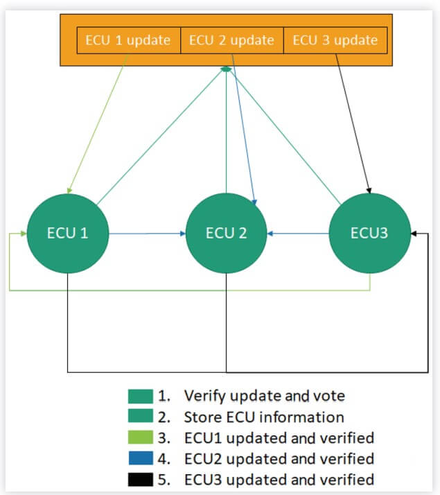

Data Flow Diagram
Example of Behaviours Discovered
Increasingly, artificial intelligence and deep neural networks are used in safety-critical automotive systems, such as self-driving cars. In order to operate safety on the road, these systems must behave correctly in the face of uncertainty, including those that are induced by human behaviour. This work contributes two key insights. First, the interaction between a non-ego human driver vehicle and the ego autonomous vehicle is modelled as a non-cooperative game. As both actors are not aware of the objective / behaviour exhibited by the other party in practice, a non-cooperative game theory approach best models the interaction between the two parties. Second, we use reinforcement learning to train a non-ego vehicle that exhibits a particular type of human behaviour, such as speedy or distracted driving. We evaluate the ability of the ego autonomous vehicle to correctly operate in the face of the non-ego vehicle. We demonstrate that a retrained ego model can better handle the uncertain behaviour exhibited by the non-ego vehicle.
Expound Generates Diverse Adversarial Examples
Example Diverse Outputs of Expound
A number of existing work introduced adversarial examples (i.e., expected input images with carefully crafted perturbations) and demonstrated their potential impact on DNNs. However, existing work for adversarial examples do not consider diversity (i.e., different ways a model may fail). In this project, we developed a two-step novelty search-based algorithm in order to discover a number of ways a DNN may fail, based on the exploration and exploitation paradigm in evolutionary computing. First, Kobalos uses a high level exploration search to identify the number of ways a model may fail. Second, Tarand exploits the information discovered by Kobalos and discovers a number of adversarial example with different perturbation filter that lead to the same failure category. This information enables developer to better understand the nature of the DNN and develop appropriate mitigation strategies or retraining for the DNN model.
Adversarial Example Generated Against a Waymo Image
State-of-the-art DNNs are being increasing used in a range of real-world applications, including those that are safety-critical (e.g., autonomous driving, medical imaging, etc.). In this project, we demonstrate that adversarial examples, images with carefully crafted minor perturbations, extend to object detection algorithms. This work explores how black-box evolutionary search-based techniques can attack state-of-the-art object detection algorithms. We demonstrate our approach on several datasets (including an autonomous driving dataset) with different DNN models. Preliminary results show that EvoAttack is capable of preventing the detection of any object in the images.
Data Flow Diagram
Enlil Simulated Conditions
As Learning-Enabled Components (LECs) are increasingly used in safety-critical systems as key decision making processes, the assurance of their correctness is paramount. However, when training environment fails to fully capture real-world phenomena, the behaviour of the LECs is potentially uncertain, and thus cannot be assured as safe. MoDALAS introduces a model-driven approach to manage the self-adaptation of Learning-Enabled Systems (LES) to account for run-time contexts for which the LEC cannot be trusted. Our framework enables a behaviour oracle to monitor and evaluate goal models at run time to determine whether or not the LECs can meet functional objectives, and enable adaptation should it be deemed untrustworthy.
Data Flow Diagram
Test Bed

ECU Update Process
Traditionally, Electronic Control Units (ECUs) in vehicles have been left unsecured. Ensuring cybersecurity in an ECU network is challenging as there is no centralized authority in the vehicle to provide security as a service. While progress has been made to address cybersecurity vulnerabilities, many of these approaches have focused on enterprise, software-centric systems and require more computational resources than typically available for onboard vehicular devices. Furthermore, vehicle networks have the additional challenge of mitigating security vulnerabilities while satisfying safety and performance constraints. This article introduces a blockchain framework which uses extra onboard computing power to detect unauthorized modifications to vehicle ECUs. A proof of concept blockchain prototype framework is implemented on a set of microprocessors (comparable to those used by simple ECUs) as a means to assess the efficacy of using our blockchain approach to detect unauthorized updates.